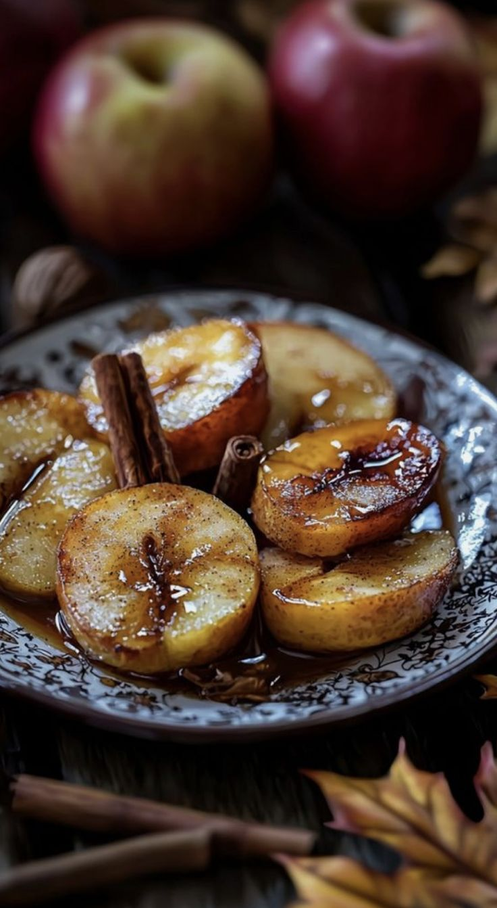

Maçã com Canela e Mel
Maçãs assadas, macias e aromáticas, com um toque doce de mel e o sabor aconchegante da canela. Perfeitas para sobremesas ou lanches saudáveis.

Ingredientes
Rende 4 porções
- 4 maçãs médias
- 2 colheres de sopa de mel
- 1 colher de chá de canela em pó
- 1 colher de sopa de manteiga
- Opcional: nozes ou amêndoas picadas
Modo de Preparo
Tempo estimado: 30 minutos
- Preaqueça o forno a 180 °C.
- Lave as maçãs e retire o miolo, criando espaço para o recheio.
- Coloque uma pequena porção de manteiga dentro de cada maçã, regue com mel e polvilhe a canela.
- Se desejar, adicione nozes ou amêndoas picadas no centro das maçãs.
- Coloque as maçãs em uma assadeira e leve ao forno por 20 a 25 minutos, até ficarem macias e levemente douradas.
- Sirva morna, regando com o mel que sobrou na assadeira.
Dica do Chef: Para um toque extra, sirva com uma bola de sorvete de baunilha ou iogurte natural.